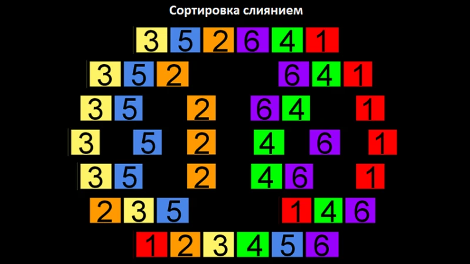

Внимание! Практически весь материал этой лекции был в видеолекции. Если вы всё хорошо усвоили, просто пробегитесь глазами и переходите дальше.
Этот алгоритм — рекурсивный, он разбивает одну большую задачу сортировки на подзадачи, выполнение которых делают его ближе к решению изначальной большой задачи
Основная идея — разделение неотсортированного массива на две части и сортировка отдельных половинок по рекурсивному принципу.
Допустим, у нас есть n элементов для сортировки. Если n < 2, заканчиваем сортировку, иначе — сортируем отдельно левую и правую части массива, и потом их объединяем. Давайте отсортируем массив
.webp)
Берем каждый неотсортированный элемент n и сравниваем его со значениями в отсортированном подмассиве справа налево,
пока не определим подходящую позицию для n (то есть, в тот момент, когда находим первое число, которое меньше, чем n).
Затем сдвигаем все отсортированные элементы, которые находятся справа от этого числа вправо, чтобы образовалось место
для нашего n, и вставляем его туда, тем самым расширяя отсортированную часть массива.
.webp)
В самом плохом случае мы сделаем одно сравнение со вторым элементом, два сравнения с третьим и так далее.
Таким образом, наша скорость равна O(n2).
В лучшем случае мы будем работать с уже отсортированным массивом.
Отсортированная часть, которую мы строим слева направо без вставок и передвижений элементов займет время Ω(n).